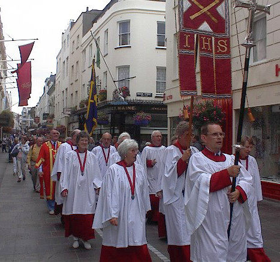

Dans sa poésie sus la Grève dé Douvre, lé poète Angliais Matthew Arnold êcrivit entouor l'èrtithant d'la Mé d'Fouai au dgiêx-neuvième siècl'ye. Ichîn en Jèrri au vîngt-tch'ieunième siècl'ye, les pélérîns d'la Saint Hélyi n'ont pon à lus gêner entouor l'èrtithant, car ch't' année ch'est sustout l'montant d'la mathée tch'empêche lé pèlerinnage traditionnel.
Assis dans san liet, chu creux dans l'rotchi qu'nou vait au jour d'aniet dans la chapelle dé l'Hèrmitage tchi fut bâtie bein d's années auprès l'martythe du saint, l'bouôn Hélyi pâssait sans doute d's heuthes à r'garder la mé et les mathées tchi l'isolaient châque jour auve ses priéthes et ses méditâtions. Même d'meuther sus un rotchi dans la Baie d'la Ville, exposé ès louêmes et au r'sîn, n'tait pon assez pouor not' ascétique et i' soulait s'buter dans des mathes dg'ieau fraide parmi les rotchièrs à seule fîn d'mortifer la chai.
S'lon la légende, la mathée emportit lé corps et la tête au Saint jusqu'à Bréville sus la côte du Cotentîn. Là où'est qu'san corps fut mîns à tèrre y'a achteu eune fontaine dgéthisseuse – not' saint patron r'est don lié auve les ieaux tout coumme ès fontaines dgéthisseuses à Saint-Jouan-des-Guérets pas bein liain d'Saint Mâlo et à Saint-Hellier, un village dans lé départément d'Seine-Mathitînme dans la Grand' Tèrre.
Même si l'almonnas des mathées n'est dgéthe favorabl'ye pouor les pélérîns ch't' année, nou peut s'asseûther qu'la Saint Hélyi n'est pon coumme la Saint Swithîn – les mathées du seize dé Juilet né prédisent pon les mathées des quarante jours à v'nîn!
Si ch'est qu'ou fêtez la Saint Hélyi atout dé l'ieau ou dé l'ieau-d'vie, jé souhaitons eune bouonne Saint Hélyi à touos les Villais et vîsiteurs d'la Ville.
Geraint Jennings
Viyiz étout: